LLMとTTSで、仲のいい3人のどうでもいい話を作る
私は『ベイビーわるきゅーれ』シリーズやタランティーノの『デスプルーフ』に出てくるような、ダラダラした会話が好きです。
そこで、私もLLMを使って、こうした駄話を生成してみました。台本の生成から音声合成、動画の制作までを行い、Webアプリ上で扱えるようにしたものです。LLMはAPIで呼び、声の合成と文字起こしは手元のPCで動かしています。
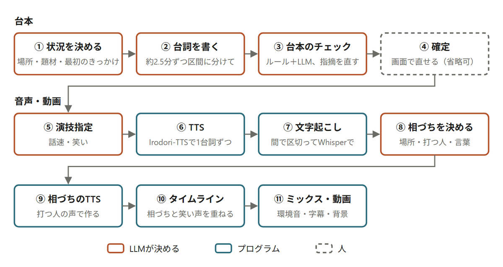
台本から音声・動画までの流れ。台本のチェックでは、ルールの検査とLLMの検査の両方を行う
何か結論を出すわけでも、役に立つわけでもありません。必ずしも面白い話をする必要すらないと思っています。ただ、登場人物たちの独特の仲の良さによって、独特のバイブスが生まれるのです。
理想的な駄話によって頭は普段以上にフル回転し、2人3人集まれば、駄話によってもたらされる発想力は時に10倍から100倍にもなります。しかし、ものすごく頭を使っているのに、そこから生まれるのは徹底的にどうでもいい話。その無駄な頭の使い方こそが、駄話の素晴らしい魅力だと思っています。
実際にできた駄話から、「きしむ椅子の正体」の冒頭を抜き出します。放課後のカフェで、3人のうち誰かの椅子がきしんだところから始まります。
「きしむ椅子の正体」。左からひより・ちえ・あや
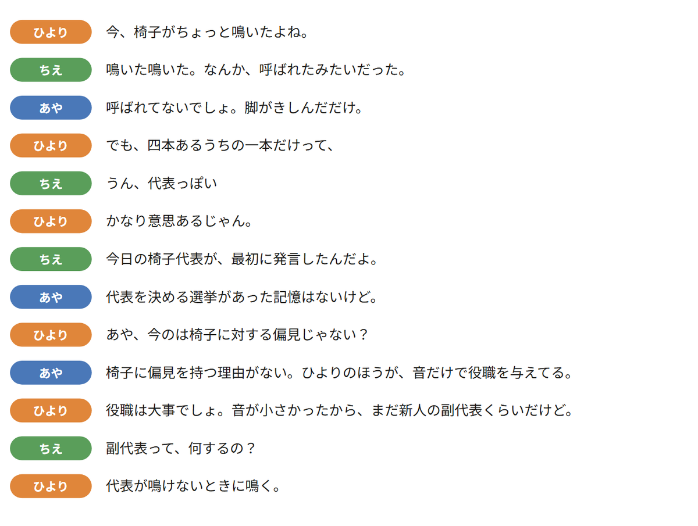
70「きしむ椅子の正体」の冒頭。台本の台詞をそのまま並べた
中身はまったくありません。椅子がきしんだだけなのに、3人で「代表」「選挙」「副代表」と役職を与えていき、最後は副代表の仕事まで決まりました。誰も話を止めずに、妙な理屈が1段ずつ積み上がっていきます。
仲がよくて、お互いに気を許しているからこそ、変なことを言えるのです。もしバイト先や会社で同じことを言ったら絶対に怒られるような話でも、この彼女たちの間では許される。そういう空気感が好きなんです。
キャラクターが仲よしであること自体が、会話の自由度を高めているように感じます。
駄話するのは、オリジナルキャラクターの3人です。同じ高校の2年生で、放課後にカフェやフードコートでだらだら話しています。
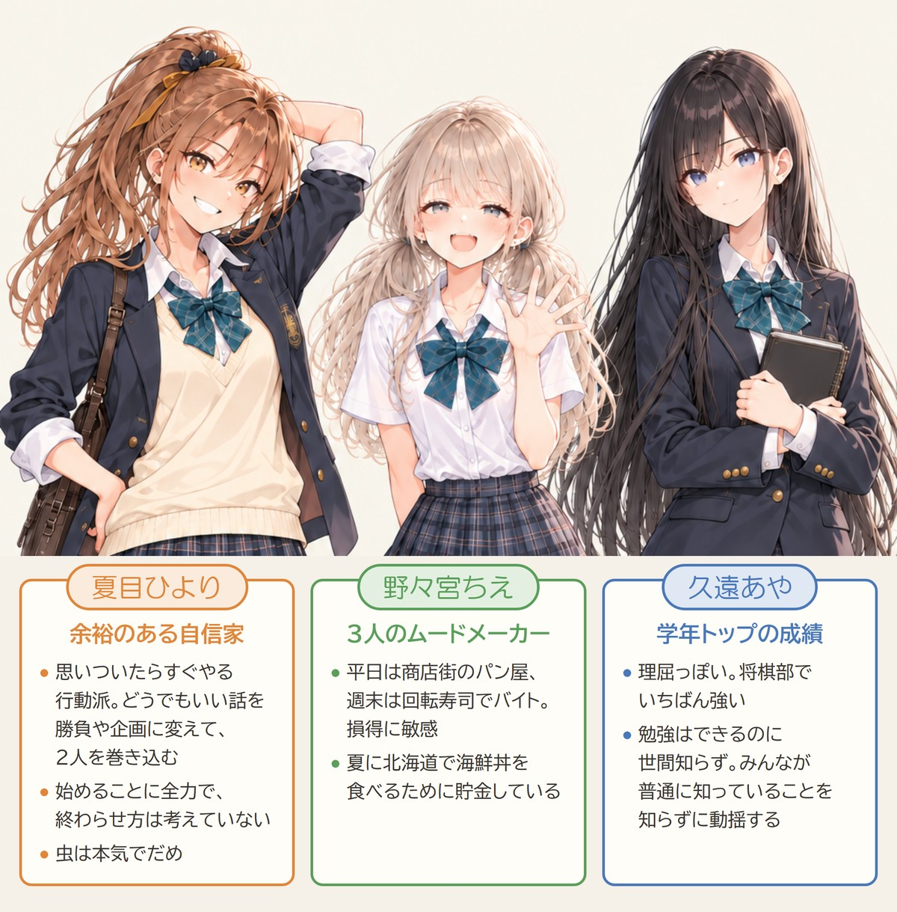
3人の関係も、2人の組ごとに決めています。
フードコートの3人。左からひより・ちえ・あや
キャラクターには、性格や一人称のほかに、オフのときの様子を細かく書いています。リラックスしたときの口調、疲れているときの態度、冗談の言い方、相づちの傾向、沈黙への反応、などです。台本を書かせるときも、気の抜けた休みの時間の会話として書かせています。
関係のほうには、呼び方、親密度、遠慮の有無、会話の主導権、からかいの傾向、それから「駄話の転がし方」を書きます。最後に、私が手で書く「味付け」の欄があります。ここには「もっと仲よく」と、私の好みをそのまま書いています。
舞台はファストフード店、カフェ、フードコートの3つです。舞台ごとに背景の絵と環境音を用意して、会話の後ろに流しています。駄話の長さは毎回指定でき、3分くらいの短いものから10分を超えるものまで作れます。
まず、どういう状況でそこにいるのか、何がきっかけで口を開くのかだけをLLMに決めてもらいます。筋書きや結論は決めません。
台詞は、駄話の全体を一度に書かせず、約2.5分ずつの区間に分けて書かせます。区間を書き終えるたびに、ここまでの要約、今の話題、それぞれの気分、途中で流れた話題、もう使った言い回しをまとめて、次の区間に渡します。前の区間から話をつなげるためと、長い駄話で同じギャグや同じ相づちを繰り返さないためです。
台本を書かせるときの決まりの最初には、こう書いています。
親しい友人どうしが、特に目的もなくだらだら喋っているところを、隣の席でたまたま聞いている感じ。
映画『ベイビーわるきゅーれ』の二人の会話のような、気の抜けた、意味のない、でも聞いていて楽しいやりとり。
正直なところ、LLMが『ベイビーわるきゅーれ』の会話の特徴をどの程度理解しているのかは、少し疑問がありますが、私は『ベイビーわるきゅーれ』が好きなので、作品へのリスペクトとして、この指定をプロンプトに残しています。
そのあとに、やってよいことと、してはいけないことが続きます。
台本ができたら、今度はキャラクターたちに喋ってもらいます。
使用しているのはIrodori-TTSです。3人の声は、参照音声を使わずに、声の特徴を文章で指定するVoiceDesignで作りました。作り方は、過去の記事「参照音声を使わない Irodori-TTS の VoiceDesignのススメ」で解説しています。
3人の声はこんな感じです。
3人の紹介ボイス
台詞ごとに、LLMが話す速さと笑いを決めます。話す速さは、そのキャラクターの基本の速さに対する倍率です。笑いは、笑ってから話す、話してから笑う、聞いている相手が台詞の終わりで笑う、笑わない、の4つから選びます。笑い声は、台詞の中でTTSに笑わせると読みが崩れやすかったので、笑い声だけを短い音声として別に作り、あとから重ねています。
LLMで台本を生成し、それをキャラクターに喋らせるところまでは、比較的うまくできました。しかし、相づちを入れようとすると、台本だけでは表現できない部分が出てきます。
ここでいう相づちとは、「うん」「へえ」「なるほど」などの短い反応です。相手が喋り終わってから反応するだけでなく、相手が喋っている最中に少し声を重ねることもあります。音声だからこそできる表現です。
最初は、あらかじめ作っておいた相づちの音声を、その場の状況に応じて挿入する方法を考えました。同意・感心・納得・驚き・半信半疑のタイプごとに、キャラクターの声で相づちを作っておき、LLMにタイプを選ばせる仕組みです。
しかし、この方法では、どうしても前後の感情がうまくつながらず、不自然になってしまいました。言葉は合っているのに、その瞬間の気持ちやテンションに沿って聞こえないんです。
そこで、相づちを入れる箇所の前後の台本をLLMに渡し、その場に合った相づちを生成する方式にしました。言葉と一緒に「小さく笑い、親しげに」のような言い方もLLMに書かせ、相づちを打つ人の声でその都度TTSに読ませます。
相づちを入れるために、今は次のような処理を行っています。
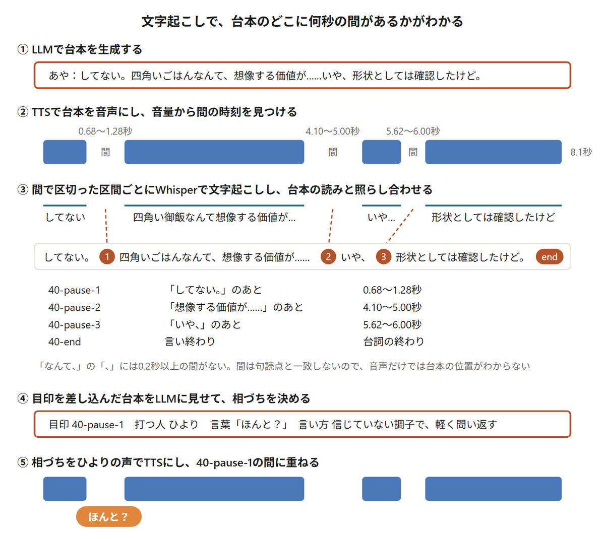
相づちを入れられるのは、相手の台詞の途中の「間」か、相手が言い終わったところです。間は、TTSで作った台詞の音声から見つけます。音量を0.02秒ずつずらしながら測り、いちばん大きいところより30dB以上小さい状態が0.2秒以上続くところを、間として扱います。
ただ、TTSは句読点のないところにも間を入れるので、間が台本のどこにあたるのかは、音声だけではわかりません。そこで、間で区切った区間ごとに音声をWhisperで文字起こしして、台本の読みと照らし合わせ、どの間が台本のどこにあたるかを決めています。
相づちを入れてよい場所には、目印を振ります。40番目の台詞の1つめの間なら「40-pause-1」、言い終わりなら「40-end」です。LLMには、この目印を差し込んだ台本を見せて、目印を1つ選ばせ、相づちを打つ人と言葉、言い方を書かせます。
台本を一度音声にしてから文字起こしまでするので、少し効率の悪い方法です。ただ、いろいろ試した結果、この方法が意外とうまくいきました。
相づちは、相手の台詞を止めずに、台詞の中の間に重ねて鳴らします。間より相づちのほうが長ければ、相手の続きを少し遅らせます。1.5秒を超えて遅らせないと収まらない相づちは取り消します。
言い終わりに入れる相づちは、相手の台詞の終わりに少し重ねて鳴らします。次の台詞とぶつかるなら次の台詞を遅らせ、2秒を超えて遅らせることになる相づちは取り消します。相づち同士は1.2秒以上あけます。相づちの音量は台詞の0.6倍にして、3kHzより上を少し弱め、メインの台詞が聴きにくくならないように工夫をしています。
相づちは、今回いちばん試行錯誤が多かったところです。うまくいかなかった方法と、それに対して行った工夫をまとめます。
次の3つの条件が必要だと考えています。
① 相づちがなくても会話が成立すること
相づちはあくまで会話の肉付けであり、それが欠けても会話の筋自体は破綻しない状態を保つ必要があります。以前、次のような問題がありました。
A（相づち）：ああ、わかる
B：わからないでしょ
この場合、「ああ、わかる」がなければ、次の台詞が成立しません。このように、相づちを前提に会話が進んでしまうことは避けたいです。
② 相手の未来を予知しないこと
相手がまだ話していない内容を、相づちで先取りしてはいけません。相づちを打つ人は、その時点までに相手が話したことしか聞いていないはずです。「言いかけた夢の結末」で、ちえが見た夢の話をしているところです。
ちえ：でも、ベルが鳴るたびに
あや（相づち）：床の模様？
ちえ：床の模様が変わるんだよー。
あやは「ベルが鳴るたびに」までしか聞いていないのに、まだ言われていない「床の模様」を口にしています。
ちえが「床の模様」と言う前に、あやが「床の模様？」と聞き返している
もう1つ、「カップの小さなシール」から。カップに貼られた小さなシールの話です。
あや：会計のときから貼ってあった。
ひより（相づち）：識別？
あや：店員さんに聞いたら、識別用だって。
ひよりも、まだ言われていない「識別」を先に口にしています。
この回はひよりの声を決める前に作ったので、この場面だけ今の声で読み直した
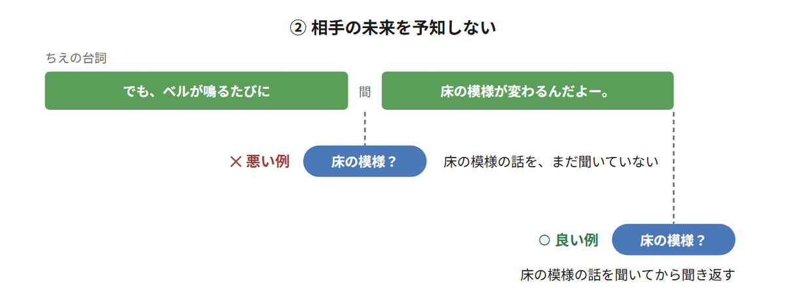
あやの相づちを入れる位置の違い。悪い例は実際に出たもの。良い例は、同じ相づちを言い終わりへ移した説明用の例
③ 自分の未来と矛盾しないこと
相づちを打った人が、そのあとの自分の台詞と矛盾する反応をしてはいけません。3人の回からはわかりやすい例が見つからなかったので、説明用に短い台本を作りました。
ひより：ねえあや、この前の将棋、実はわざと負けてあげたんだよね。
あや（相づち）：ふふっ、そうね
あや：……三分で詰んでたじゃない。
あやは楽しそうに笑って同意したのに、次の台詞では急に冷めて、ひよりの話をひっくり返しています。相づちを決めるときに、打つ人が次に何を言うのかを見ていないと、こうなります。
相づちだけを替えた2つ。あやの次の台詞は同じ
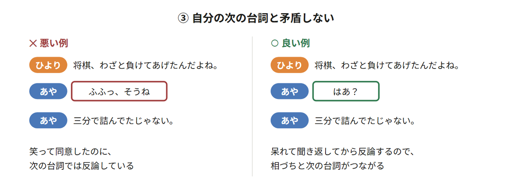
説明用に作った台本。台詞は短くした
つまり、相手の未発言の内容は参照させず、かつ相づちを打つ側の直後の台詞とは矛盾させない制御が必要になります。なんだかややこしい話ですが、こういう細かい部分が自然な駄話には必要なんだと思います。
最初は、台本を生成する段階で、相づちもまとめて生成させようとしました。しかし、この方法にはいくつか問題がありました。
特に困ったのは、相づちを取り除くと会話が成立しなくなることでした。さきほどの「床の模様？」と「識別？」も、台本と一緒に相づちを書かせた回のものです。台本を書くLLMは、相手の台詞の続きも自分で書いているので、続きを知ったうえで相づちを書けてしまいます。
次に、処理を2つに分けました。まず、LLMに相づちを入れるタイミングを決めさせます。その後、別のLLMの処理で、どのような相づちを入れるのかを決めさせます。
しかし、この方法では、相づちを言うキャラクターの演技と、そのキャラクターの次の台詞の感情がうまくつながらないという問題が発生しました。
こうした試行錯誤の結果、前述のとおり、台本をいったん音声化してから相づちを差し込む構成に落ち着きました。
この方法のいちばんの利点は、相手が話している途中の間に、相づちを差し込めることです。「一生ひとつだけ」の場面で、流れを示します。
ひより：あや、今ちょっと四角いごはんを想像したでしょ。
あや：してない。（ひより：ほんと？）四角いごはんなんて、想像する価値が……いや、形状としては確認したけど。
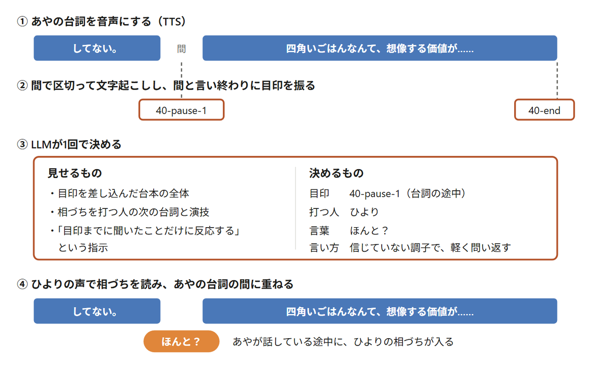
LLMは、目印を差し込んだ台本の全体を見て、目印を1つ選び、打つ人・言葉・言い方を1回でまとめて決めます。
そのうえで、「相づちを打つ人は、その目印までに相手が話したことだけを聞いている」「相づちを打つ人の次の台詞・感情・演技指定は見てよい」と指示します。ひよりの「ほんと？」は、あやの「してない。」までしか聞いていない相づちです。あやは、そのあと言い訳を始めて、結局「形状としては確認した」と白状します。
あやの「してない。」のあとの間に、ひよりの「ほんと？」が入る
ほかにも、台詞の途中に入った相づちをいくつか並べます。
（ ）が相づち。アイコンは相づちを打った人
処理の手順は増えますが、生成される相づちの自然さは大きく向上しました。ただ、台詞の途中に入れると先取りが起きやすいので、相づちは言い終わりを基本にして、台詞の途中に入れるのは、そこで話がひと区切りついていて、そこまでの内容だけで反応できるときだけにしています。3人の回のうち今の方法で作った33本では、LLMが決めた相づち564件のうち67件（12%）が台詞の途中、497件（88%）が言い終わりに入っていました。
それでも、台詞の途中に相づちを入れると、今も相手の未来を予知してしまうことがあります。そこで、未来を予知した相づちは、挿入位置をずらすロジックを実装しています。台詞の途中に入れた相づちに、相手がまだ言っていない部分にだけある言葉（漢字・カタカナ・数字のまとまり）が含まれていたら、その相づちを台詞の言い終わりへ移します。言い終わりに置けなければ、その相づちは使いません。
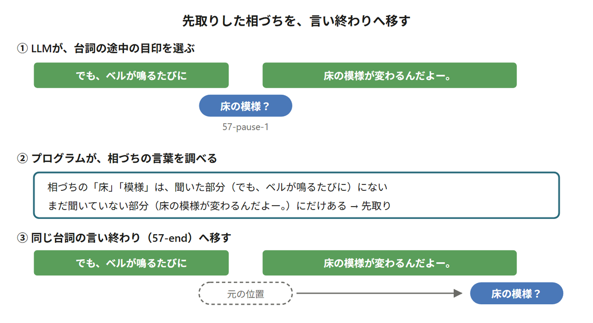
言い終わりに別の相づちがすでに入っていれば、この相づちは使わない
この判定は、言葉が重なっているかしか見ていません。言葉は重ならないけれど意味で先取りしているものは、今も拾えません。
そのため、相づちを担当するLLMには、なるべく能力の高い新しいモデルを使ったほうがよさそうだと感じています。実際、台本の中で反応を書かせていたときは、未来予知の割合が、gpt-5.6-lunaの34%（47件中16件）から、gpt-6-lunaでは12%（50件中6件）に減りました。今の方法の相づちには、さらに上のgpt-6.1-solを使っています。lunaでは、相づちを打つ人の次の台詞と食い違うことがあったためです。
同じ「歯ブラシの持ち手」という話題の、同じ台本から、2つの音声を作りました。
「歯ブラシの持ち手」。左からあや・ちえ・ひより
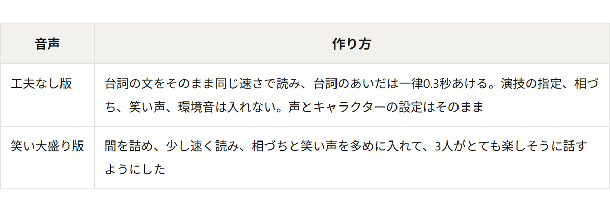
聞いてもらうのは、あやが「ひよりは？ 歯ブラシ、どっちで持つの。」と聞いてから、ひよりが「歯ブラシ置いて、チューブ持って、つけて、また持つ。普通でしょ？」と言うまでです。
同じ台本の同じ範囲。笑い大盛り版には、笑い声が12回、相づちが1回入っている
ひよりの説明を漫画にすると、こうなります。歯ブラシもチューブも、右手しか使いません。
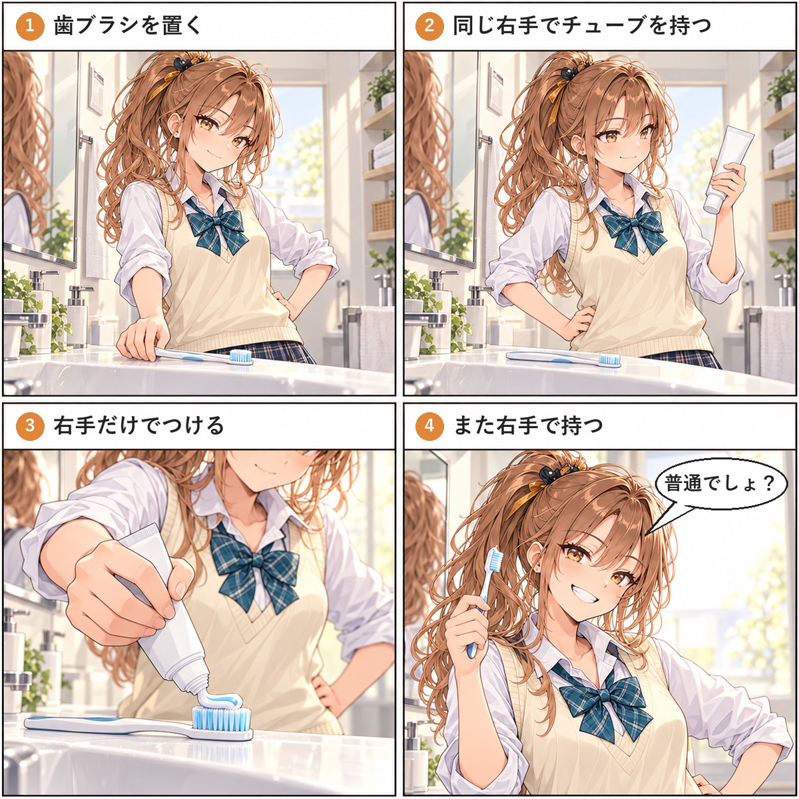
ひよりの歯磨き粉のつけ方。全然意味わからなかったのでchatGPTにイラストに起こしてもらったもの。「歯ブラシ置いて、チューブ持って、つけて、また持つ。普通でしょ？」わからん。
駄話はあくまで駄話です。何か意味があることや、ためになることを期待するものではありません。
それでもごくたまに、名作と呼びたくなるような駄話が生まれることがあります。気に入っているのが、こちら。犬派か猫派かの話という定番の駄話ですが、遠慮のない彼女たちだからこそ突飛なセリフがたくさん生まれ、心地よい風を流しています。
「犬と猫。どっちが好き？」。座る前に一周して、今日の位置を決めるひより
「犬と猫。どっちが好き？」の台本を、笑い大盛りで音声にしたもの
もう1つは、鳥の名前しばりのしりとりです。
普通の仲の良い女子高生たちかと思っていたら、3人ともやたら鳥の名前に詳しいギャップがたまりません。あやの番が連続で来たり、スズメを連続で言おうとしたりと無法しりとりですが、人間以上の本気のしりとりで楽しかったです。
作り始めたときは、LLMに台本を書かせてTTSで読ませれば、それで駄話になると思っていました。実際には、駄話は奥が深く、私の思う理想の駄話には遠く及びません。だからこそ我々は駄話に惹かれ、駄話を大切にし、駄話によって関係性を深めていくのでしょう。
LLMというと、仕事を効率化したり、何かの問題を解決したりする使い方が注目されがちです。しかし、仲のいい人たちがしょうもない話をしている音声を延々と生成する、という使い方もあっていいんじゃないかと思います。
脳を休めるため。孤独を紛らわせるため。駄話を聞いてみませんか？
今の方法で作った回の、LLMの入力と出力のトークン数です。台本・演技などはgpt-6-luna、相づちはgpt-6.1-solで作っています。TTS（Irodori-TTS）と文字起こし（Whisper）は手元のPCで動かしているので、トークンは使いません。
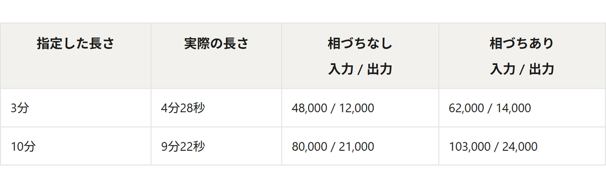